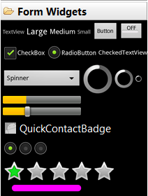
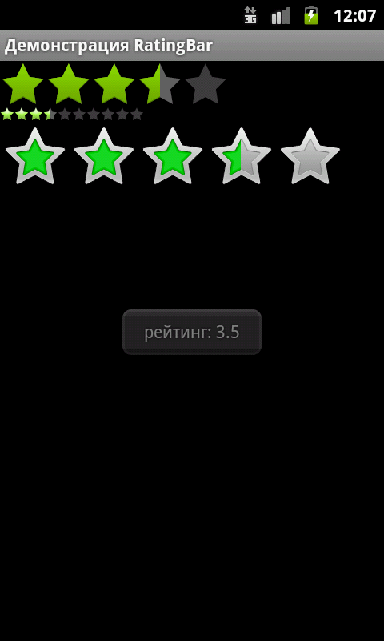
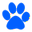
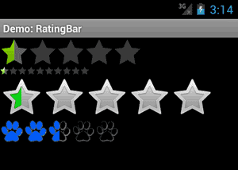

/* Моя кошка замечательно разбирается в программировании. Стоит мне объяснить проблему ей - и все становится ясно. */
John Robbins, Debugging Applications, Microsoft Press, 2000

/* Моя кошка замечательно разбирается в программировании. Стоит мне объяснить проблему ей - и все становится ясно. */
John Robbins, Debugging Applications, Microsoft Press, 2000
Методы
Пример с RatingBar
Собственный вид
Виджет RatingBar показывает значение рейтинга в виде звездочек. Можно установить рейтинг касанием пальца или с помощью клавиш курсора, используя заранее заданное количество звездочек.
RatingBar находится в папке Form Widgets

Класс RatingBar является расширением классов AbsSeekBar и ProgressBar.
Для установки количества звёзд в режиме дизайна используется свойство Num Stars (атрибут android:numStars).
Для виджета RatingBar используются следующие методы:
Для отслеживания изменения рейтинга существует интерфейс OnRatingBarChangeListener.
У виджета есть два встроенных стиля ratingBarStyleSmall (маленькие звёздочки) и ratingBarStyleIndicator (большие звёзды), которые работают только в режиме индикатора, т.е. пользователь не может их изменять. Рассмотрим пример.
Расположим на экране три виджета RatingBar с разными стилями.
<?xml version="1.0" encoding="utf-8"?>
<LinearLayout xmlns:android="http://schemas.android.com/apk/res/android"
android:layout_width="fill_parent"
android:layout_height="fill_parent"
android:orientation="vertical" >
<RatingBar
android:id="@+id/ratingbar_Indicator"
style="?android:attr/ratingBarStyleIndicator"
android:layout_width="wrap_content"
android:layout_height="wrap_content" />
<RatingBar
android:id="@+id/ratingbar_Small"
style="?android:attr/ratingBarStyleSmall"
android:layout_width="wrap_content"
android:layout_height="wrap_content"
android:numStars="10" />
<RatingBar
android:id="@+id/ratingbar_default"
style="?android:attr/ratingBarStyle"
android:layout_width="wrap_content"
android:layout_height="wrap_content" />
</LinearLayout>
Переходим к программной части.
setContentView(R.layout.main);
final RatingBar ratingBar_Small = (RatingBar)findViewById(R.id.ratingbar_Small);
final RatingBar ratingBar_Indicator = (RatingBar)findViewById(R.id.ratingbar_Indicator);
final RatingBar ratingBar_default = (RatingBar)findViewById(R.id.ratingbar_default);
ratingBar_default.setOnRatingBarChangeListener(new RatingBar.OnRatingBarChangeListener(){
@Override
public void onRatingChanged(RatingBar ratingBar, float rating,
boolean fromUser) {
// TODO Auto-generated method stub
ratingBar_Small.setRating(rating);
ratingBar_Indicator.setRating(rating);
Toast toast = Toast.makeText(ViewsDemoActivity.this, "рейтинг: "+String.valueOf(rating),
Toast.LENGTH_LONG);
toast.setGravity(Gravity.CENTER, 0, 0);
toast.show();
}});
Запускаем приложение, тыкаем лапкой в звёздочки в третьем ряду. Обратите внимание, что если коснуться левой части звезды, то можно установить половинку рейтинга. Благодаря событию OnRatingBarChanged, мы можем отслеживать изменения рейтинга и устанавливать такое же значение у рейтингов-индикаторов.
Подобный элемент управления можно использовать в приложениях, где требуется оценка чего-либо: музыкального альбома, кулинарного рецепта, степень пушистости кота и т.д.

Если вы не хотите использовать звездочки для оценки рейтинга, то можете нарисовать собственные картинки и внедрить их с помощью стилей. Например, коты предпочитают видеть в качестве рейтинга лапу. Давайте им поможем.
Подготовим две картинки (тёмную и светлую) для двух состояний и поместим их в папку res/drawable. На самом деле их должно быть больше, но мы упростим пример.

Поместим в папку res/values/ файл с описанием стиля.
<?xml version="1.0" encoding="utf-8"?>
<resources>
<style name="CustomRatingBar" parent="@android:style/Widget.RatingBar">
<item name="android:progressDrawable">@drawable/custom_ratingbar</item>
<item name="android:minHeight">32dip</item>
<item name="android:maxHeight">32dip</item>
</style>
</resources>
Далее в папке res/drawable разместим три xml-файла, которые будут отвечать за внешний вид нашего RatingBar.
<?xml version="1.0" encoding="utf-8"?>
<layer-list xmlns:android="http://schemas.android.com/apk/res/android" >
<item
android:id="@+android:id/background"
android:drawable="@drawable/custom_ratingbar_empty"/>
<item
android:id="@+android:id/secondaryProgress"
android:drawable="@drawable/custom_ratingbar_empty"/>
<item
android:id="@+android:id/progress"
android:drawable="@drawable/custom_ratingbar_filled"/>
</layer-list>
<?xml version="1.0" encoding="utf-8"?>
<selector xmlns:android="http://schemas.android.com/apk/res/android">
<item android:drawable="@drawable/paw_off" android:state_pressed="true" android:state_window_focused="true"/>
<item android:drawable="@drawable/paw_off" android:state_focused="true" android:state_window_focused="true"/>
<item android:drawable="@drawable/paw_off" android:state_selected="true" android:state_window_focused="true"/>
<item android:drawable="@drawable/paw_off"/>
</selector>
<?xml version="1.0" encoding="utf-8"?>
<selector xmlns:android="http://schemas.android.com/apk/res/android">
<item android:drawable="@drawable/paw_on" android:state_pressed="true" android:state_window_focused="true"/>
<item android:drawable="@drawable/paw_on" android:state_focused="true" android:state_window_focused="true"/>
<item android:drawable="@drawable/paw_on" android:state_selected="true" android:state_window_focused="true"/>
<item android:drawable="@drawable/paw_on"/>
</selector>
Осталось разместить лапочки на экране:
<RatingBar
android:id="@+id/ratingbar"
style="@style/CustomRatingBar"
android:layout_width="wrap_content"
android:layout_height="wrap_content" />
Запускаем проект и смотрим на результат:
